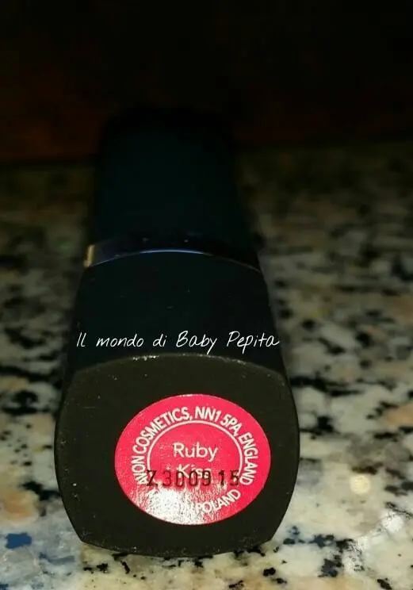
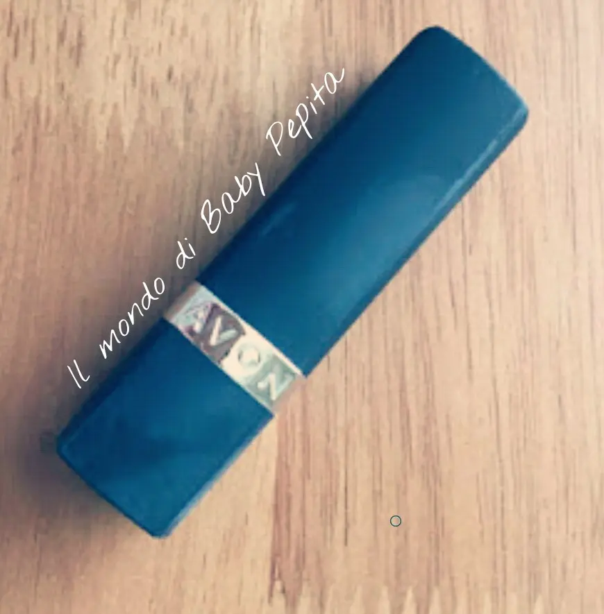
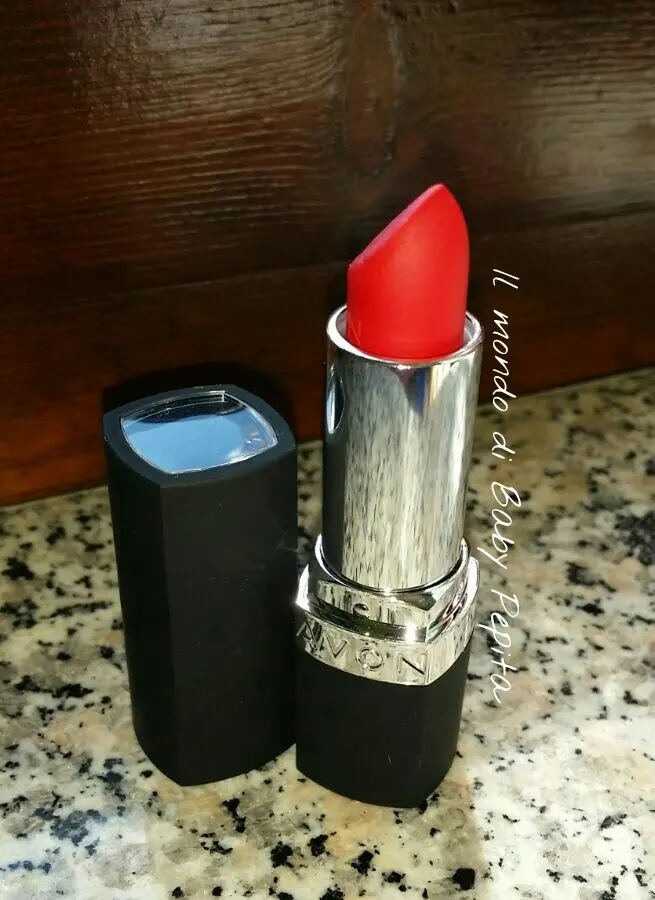
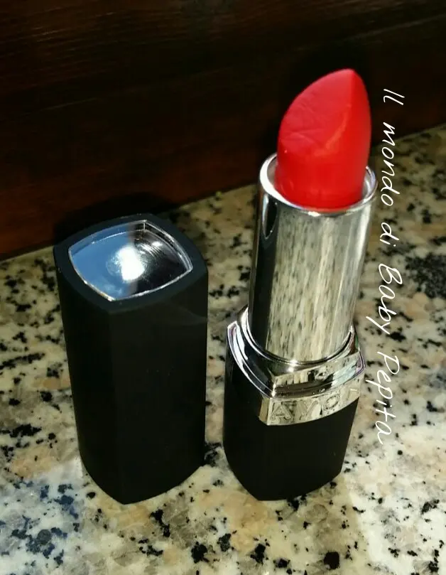
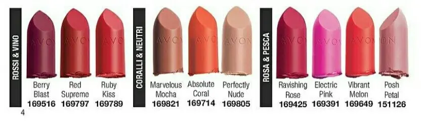
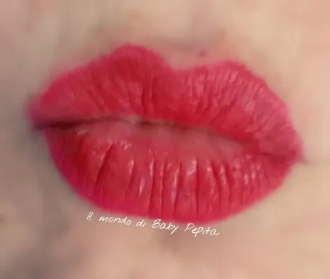
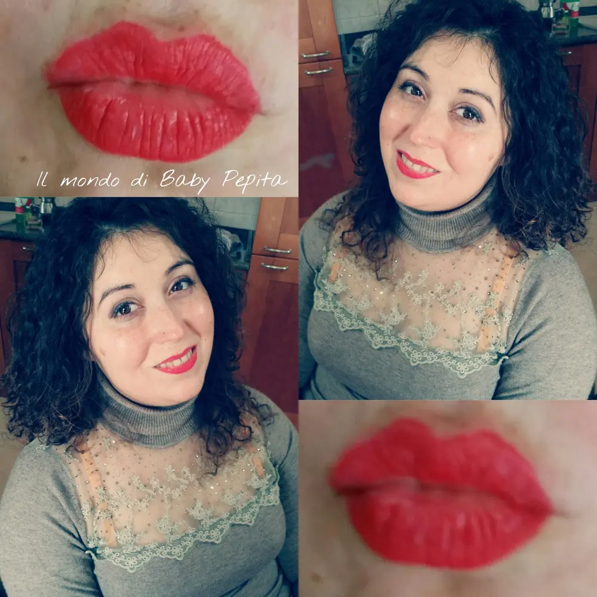

Avon - perfectly matte
Nuovo acquisto AVON dalla nuova gamma di rossetti PERFECTLY MATTE. .
Questo che ho preso io è proprio il rossetto che è presente in questa pubblicità che sta facendo in questi mesi in tv
RUBY KISS è il suo nome finitura opaca ma al tempo stesso perfettamente idratate.
Un bel rosso classico freddo. Adatto ad ogni tipologia di donna, alle teenager ma anche alle donne mature.Questo rosso però, vi dirò, lo metto senza problemi anche di giorno ma per come sono io, che distinguo i colori da giorno e quelli da sera, lo collocherei più per la sera.

Il packaging è veramente bello.
Tutto nero con scritta AVON cromata all'apertura .

La parte superiore invece è trasparente per permettere di vedere il colore del Rossetto senza aprirlo.
Per richiamare poi l'effetto matte della linea, il packaging è vellutato e non lucido come di solito siamo abituati a vedere in avon. Piacevole al tatto.

Lo trovo un rossetto di buona qualità; non evidenzia le screpolature e si stende con molta facilità grazie alla sua consistenza cremosa.
Parliamo della durata?
Beh, questo è un punto a suo favore. Estremamente confortevole, perfectly matte di Avon dura che è una meraviglia (anche a me che di solito ho problemi di durata di lipstick ).
Il rossetto ha un bel profumo delicato, che mi ricorda la frutta dolce.

Questa nuova gamma offre ben 10 tonalità di rossetti matte:

Gamma molto varia che va dai colori più classici come appunto il rosso, a quelli più stong come sul vinaccia; colori anche più tenui come i nude e poi per finire quelli più primaverili come i rosati e coralli.

Il prezzo è di 5,95 €
per 3.6 g di prodotto.
